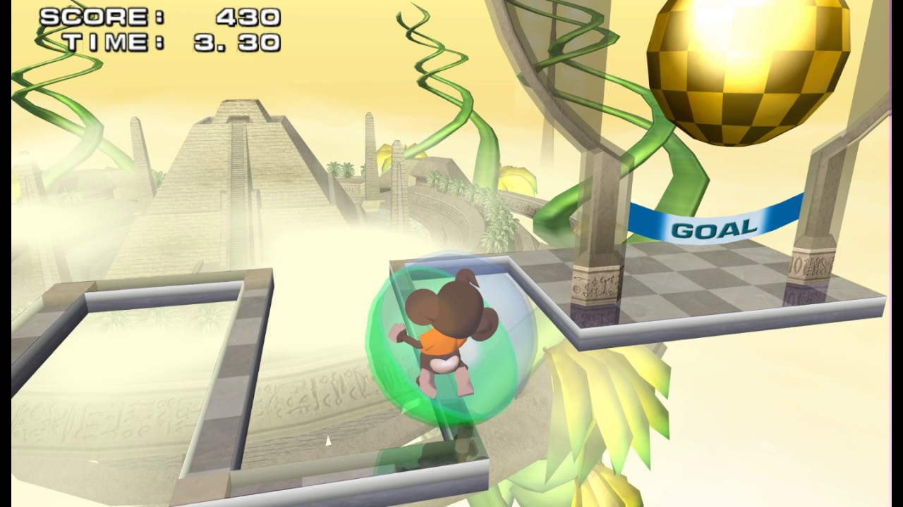
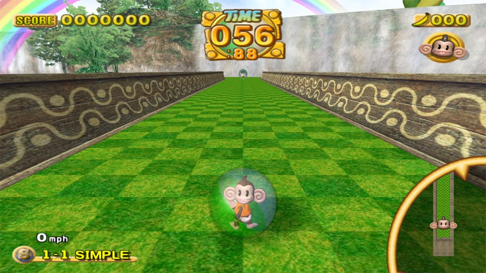
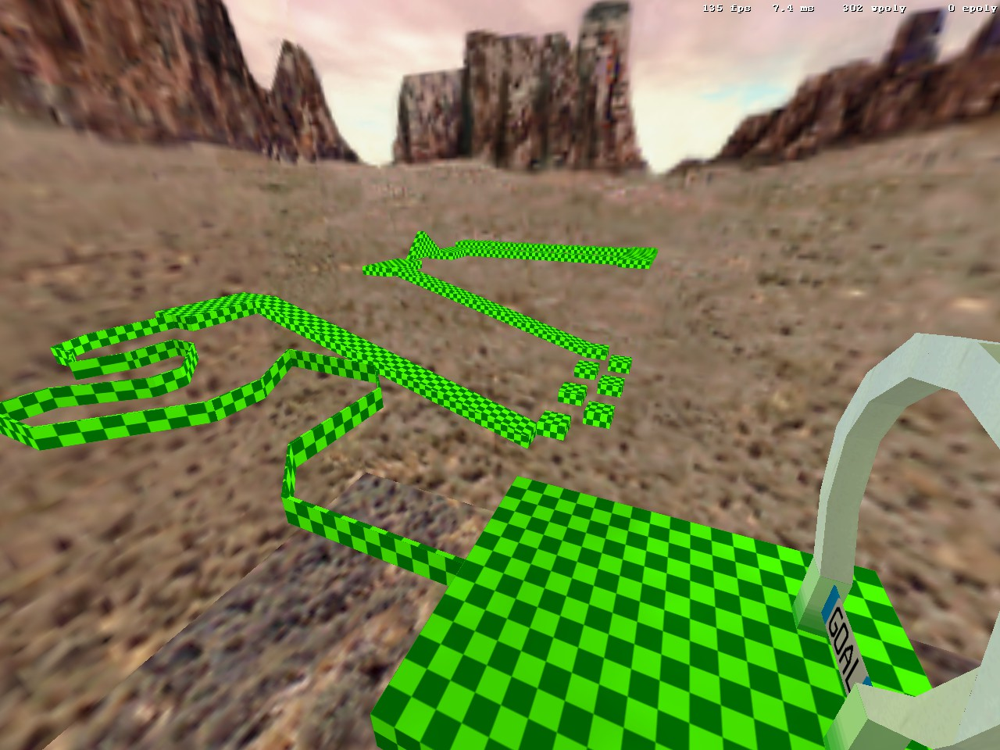
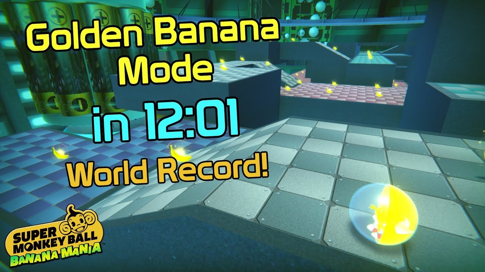
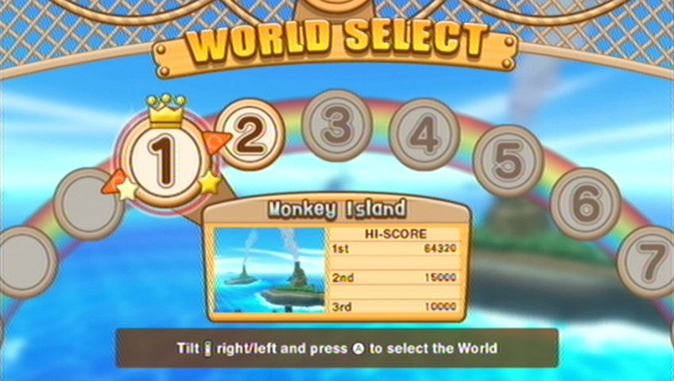
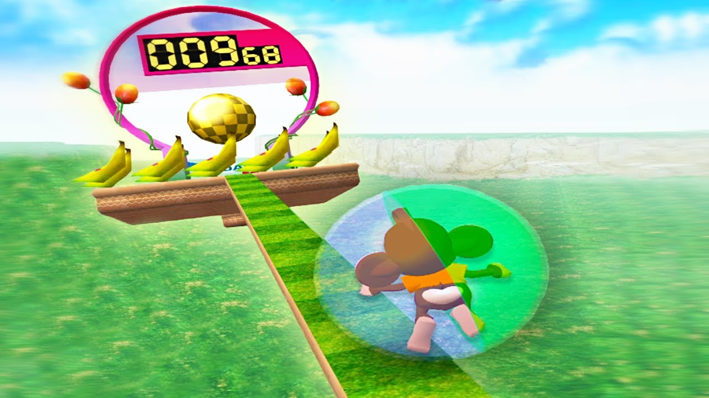
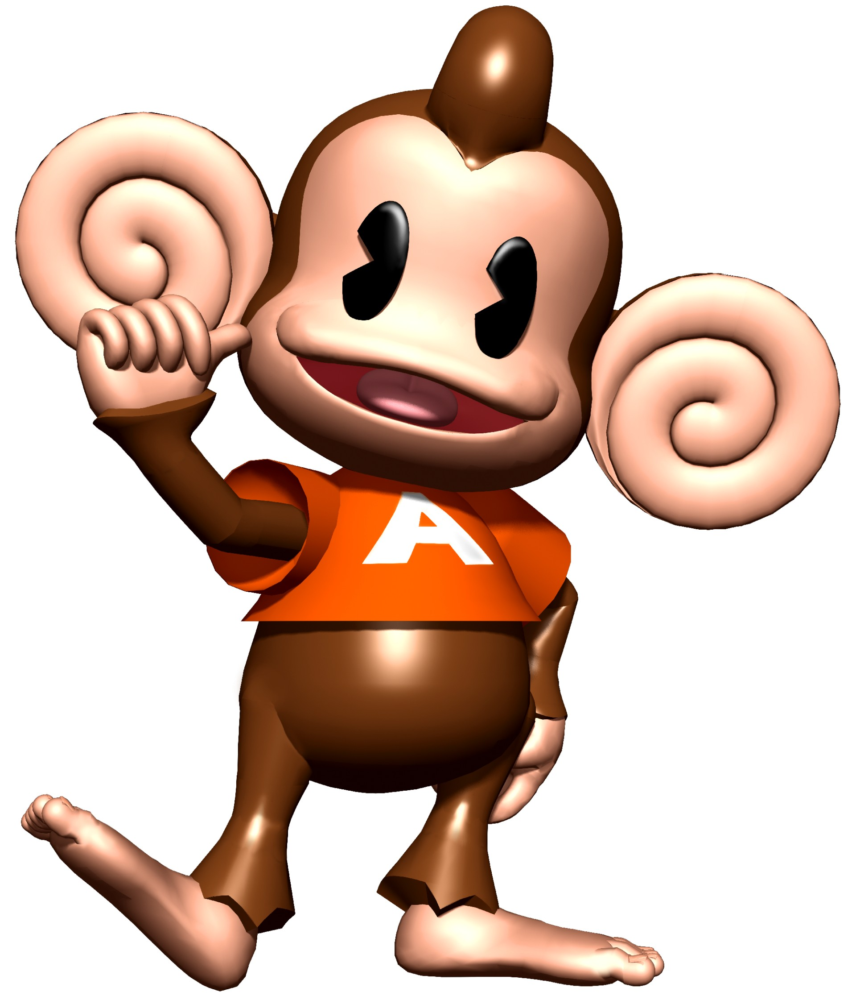

Essential Game Mechanics
Super Monkey Ball is all about precision and timing. Understanding the core mechanics will help you dominate any level.
Control & Balance

The most important skill is learning how your monkey responds to input. Small movements are better than large movements.
- Use gentle tilts for precision
- Build momentum gradually
- Remember you control the level not the ball
Momentum Management

Speed is your friend but too much momentum will make you lose control. Learn to manage your speed by timing your movements to slow down before sharp turns.
- Tilt opposite before sharp turns
- Use walls to brake
- Don't panic on narrow passages
Route Planning

Watch the level layout before you move. Plot your path through obstacles and identify where you need to slow down or speed up.
- Study the full level first
- Identify key obstacles
- Plan your route in advance
Golden Banana Collection

Collecting all bananas in a stage adds a fair challenge. Some bananas are hidden in tricky spots. look for alternate paths off the main route.
- Explore side paths
- take your time
- Replay levels to find hidden bananas
Difficulty Progression

Worlds 1-3 (Beginner): Learn basic controls and understand ball physics. Don't worry about speed.
Worlds 4-6 (Intermediate): Precision becomes critical. Start thinking about optimal paths and when to speed up or slow down.
Worlds 7-10 (Advanced): Master perfect inputs and complex routing. These levels demand precision and speed.
Common Mistakes to Avoid

- Panicking on narrow passages: Slow down before you enter. Rushing leads to falls.
- Building too much speed: Speed is good but not at the cost of your control.
- Not using the right character: If you're struggling try a different monkey.
Pro Tips

- Watch gameplay videos to see how speedrunners tackle challenging levels
- Practice building muscle memory
- Stay calm under pressure the game wants you to panic.
- Each character works best on different levels. Experiment with them.